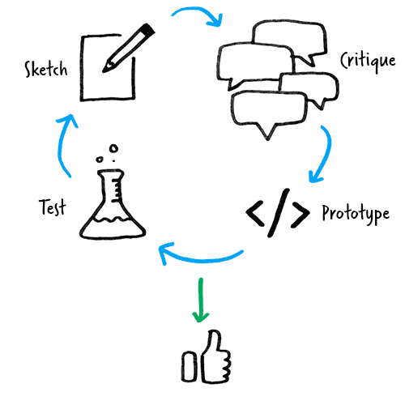

Revolver Yoga is an esteemed local business in my hometown in Eastern Washington. After renovating a studio in historic downtown Walla Walla, Owner and instructor, Courtney Morgan, opened her doors in the Winter of 2013. After several months of smooth sailing, Courtney began to expand her class selection and hired more instructors to keep up with her popular yoga studio. Courtney worked in graphic design for much of her career and understood the impact of her online presence. After a year business, she knew that she needed to improve her brand's presence on the web. At the time, Revolver Yoga's site wasn't optimized for mobile devices and many of her customers were confused by the interface and arrangement of content. Most importantly, bookings were completed on a separate web page. Courtney was determined to convert the missed opportunities and later asked me to design a user-friendly website that would ultimately drive a high conversion rate and increase online bookings.
After talking with Courtney about her challenges with online engagement, we targeted areas that could be leveraged through thoughtfully tailored UX design. We focused our discussions and design sessions around three critical items: An organized & human-centered interface, optimization for all devices, and a seamless online schedule & booking system. In my preliminary sketches and wireframes, I focused on making the interface easy to scan, search, and interact with. In the previous site, many of the transitions between content with jarring and confusing. As I developed the UX/UI for the site, I took into consideration the principle of change blindness. I wanted the users to be able see how their actions caused changes in the page. With a persistent navigation on the page, customers would easily understand the contents of the website and get a bearing for where they were. Using Fading and subtle transitions between loading and changing content, users would understand the relationship between their actions and the page's response.
After settling on a general layout and keeping the goals and constraints in mind, we moved forward with rapid prototypes. After feedback, critique, and revisions I quickly delivered mock-ups to Courtney. After validating the proofs, I moved forward and delivered the first draft of the MVP website in less than a week. Using a mobile-first approach, the first deliverable was a interactive website that looked like a wireframe with transitions and animations. The quick delivery of the MVP helped us to focus on essential elements of the site (RWD, UI, and attention to change blindness). Within another week, the typography, color, and photography were polished and refined. Between the two of us, the site was planned, designed, and launched within 30 days.
Courtney was thrilled with the final result and after three months I touched base with her and was happy to hear that the site was meeting all of her expectations. Here’s what Courtney has to say about the site:
"What an absolute pleasure it has been to work with Matt and see the amazing website for my business come together quickly and without any stress (on my end, at least). It has been so easy to collaborate with him, to tell him my needs, ideas, vision, and how my clients need the site to function to get them into the door. Matt's ability to integrate not only a super functional blog interface but also, and most importantly, our external booking site for classes and workshops has made the transition from curiosity to client commitment so much simpler. His clean and stylish design aesthetic has proven time and again to impress potential clients and bring them into the studio.
Working with Matt has been a match from day one, and I couldn't be happier. I highly recommend him to any of my friends, clients, or business connections who are looking for a designer who genuinely cares about his work; from the initial steps of creating the concept, communication, and ideal personalized functionality to a clear aesthetic that represents their branding. Matt will be my designer for as long as he will take on my projects!"
Courtney Morgan, Founder